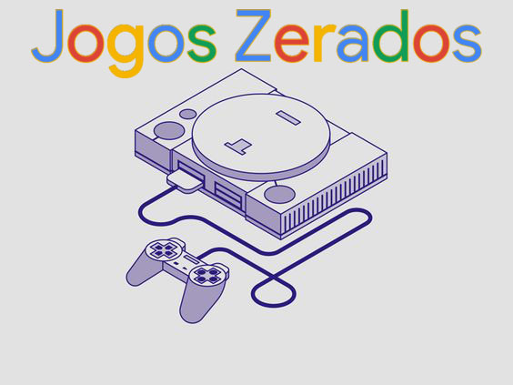

Ifmupo Videogame etc.
Jogos Zerados
Programação
Vídeos
Jogos Zerados

Programação de Lives
Segunda-feira: 20h - Jogo X
Quarta-feira: 20h - Jogo Y
Sexta-feira: 20h - Jogo Z
Vídeos Recentes
Vídeo 1: Análise de Jogo
Vídeo 2: Gameplay
Vídeo 3: Dicas
Testes